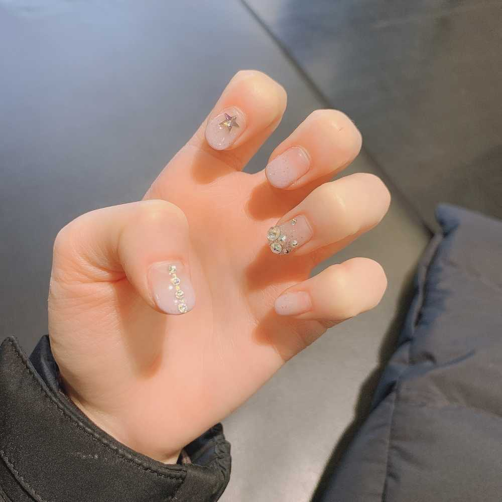

こんにちは😃
ひいだよ🍓
今日のお昼ご飯は
ひいの好きなものがたくさんありました☺️
白菜のキムチとか〜
オリコギとか！！
オリコギって知ってますか？？
오리 オリ が「アヒル」
고기 コギ が「お肉」
とっても美味しいんです✨✨
そして냉국 「ネングク」を知ってますか？？
冷たいスープなんだけど
中にはワカメやキュウリが入ってて
お酢の味がします🥒
健康的〜😇💪
毎日食べたい🤭💭
キムチ食べたから口がニンニクパーティ🙊ㅋㅋ
歯を磨いても残るくらい
たくさん入ってたみたいですね😇💦
でも美味しかったからよし◎
そして最近メール全然送れてなくて
ごめんなさい🙇♂️🙇♀️
送れる時にたくさん送るので
待っててね🙌🙌
そういえば
最近ネイル全然してないな💅
久しぶりにしたいけど
ひい伸びるの早いからなあ。。
前まではお花柄にハマってたけど
今度するとしたら夏っぽく涼しげな
感じにしたいなあ〜！！
それかグラデーション！！
でも昨日爪切ったばかりだから
もう少し伸びてからにしよっと、、笑
それじゃあ撮影行ってきます！！
오늘은 "오리고기"를 먹었어요!
아주 좋아하는 요리에요😊✨
그리고 배추김치도 계속 먹고 싶었으니까 먹을 수 있어서 행복했어요!
점심은 무엇을 먹었어요??
아주 좋아하는 요리에요😊✨
그리고 배추김치도 계속 먹고 싶었으니까 먹을 수 있어서 행복했어요!
점심은 무엇을 먹었어요??

この時は비올레타 のイメージに合わせて
紫色にしたよ！！
ばいばーい👋
ひいまる🥟